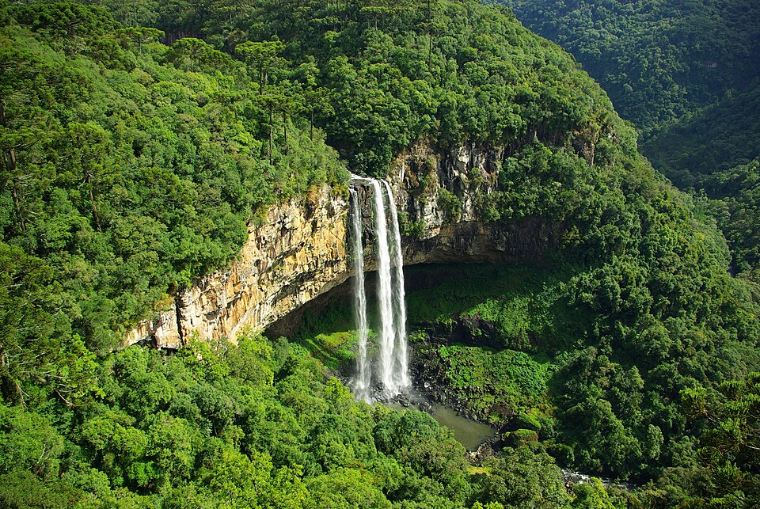

- Agro forte, futuro sustentável
- Equilíbrio entre produção e meio ambiente
O meio ambiente é formado pelo ar, água, solo, seres vivos e ecossistemas, sendo essencial para a vida. Ele fornece recursos naturais, regula o clima, mantém a biodiversidade e oferece serviços como purificação da água e produção de oxigênio. Atualmente enfrenta problemas como desmatamento, poluição, mudanças climáticas, perda de biodiversidade e excesso de resíduos. Cada pessoa pode ajudar economizando água e energia, reciclando, reduzindo o uso de plástico, usando transporte sustentável e plantando árvores. Preservar o meio ambiente garante qualidade de vida para as gerações atuais e futuras.
Endereço: Av. Nossa Sra. Aparecida, s/n, Centro, Turvo - PR, 85150-000 Telefone:(42) 3642-1210

Economizar água e energia – fechar torneiras, apagar luzes desnecessárias e usar aparelhos eficientes. Reduzir, reutilizar e reciclar – separar lixo, reaproveitar materiais e diminuir o consumo de descartáveis. Plantar árvores e conservar áreas verdes – ajuda a purificar o ar, proteger o solo e a biodiversidade. Usar transporte sustentável – caminhar, andar de bicicleta ou usar transporte público reduz poluição. Evitar poluição – não jogar lixo em rios, praias ou ruas e reduzir o uso de produtos químicos nocivos. Consumir de forma consciente – comprar apenas o necessário, preferir produtos ecológicos e apoiar práticas sustentáveis.
Endereço: Av. Nossa Sra. Aparecida, s/n, Centro, Turvo - PR, 85150-000 Telefone:(42) 3642-1210
.jpg)
Os antecedentes históricos do Colégio Estadual Edite Cordeiro Marques – Ensino de 1º e 2º Graus, inicia-se aproximadamente em 1932, com classe de alfabetização em casa particular de Frida Rickli Naiverth; em 1938/39, criou-se a Escola Pública Municipal do Rio Turvo, com professores Municipais e Estaduais; em 26/05/71, através do Decreto nº 408, criou-se o Grupo Escolar do Distrito de Turvo.
Endereço: Av. Nossa Sra. Aparecida, s/n, Centro, Turvo - PR, 85150-000 Telefone:(42) 3642-1210
_28mar09.jpg)